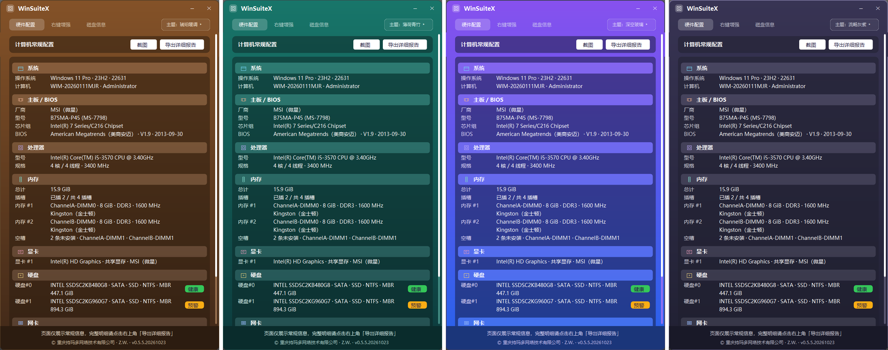

| 版本号 | v0.5.5.20261023（四段式：主.次.修订.日期戳） |
| 发布日期 | 2026-10-24 |
| 构建产物 | dist/winsuitex-gui-gdi.exe（GUI 面板）+ dist/winsuitex.exe（命令行 v0.1.0） |
| 质量门禁 | fmt 干净 · clippy -D warnings 零警告 · 366 tests 通过 · 资源校验 PASS |
| 验收 | 真机三页目检 + check_shot 断言全过；发布前审查专家团结论 GO |
releases/WinSuiteX-GUI-v0.5.5.20261023.zip（解压即用）v0.5.5.20261023winsuitex-gui-gdi.exe，无需安装；纯本地运行，不上传任何数据。